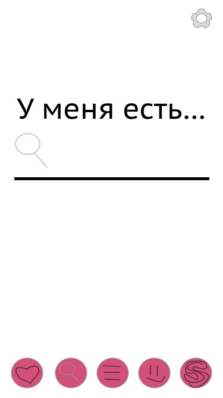
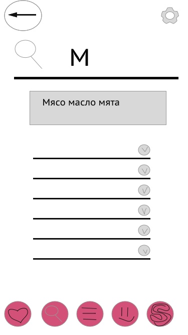
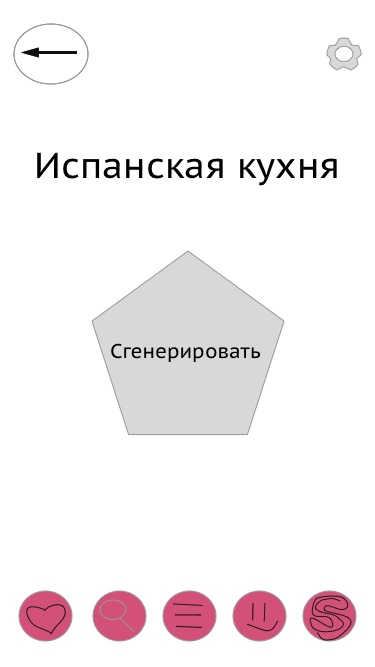
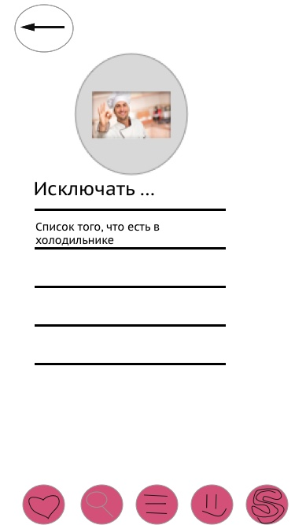
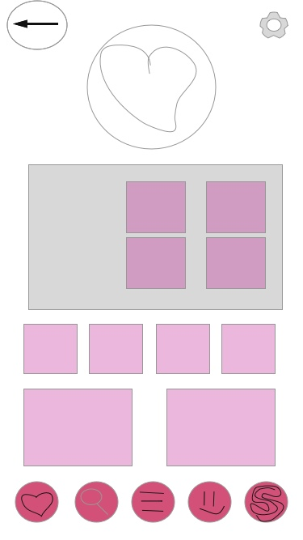

Инициация проекта
Проблема
- Потребность быстрого поиска рецепта в условиях ограниченого времени из имеющихся ингредиентов дома
- Потребность в эстетическом оформлении приложения/сайта мотивирующего на кулинарную деятельность
- Проблема простоты и удобства использования, без перегруженная лишней информацией
Целевая аудитория
Проект направлен в основном на молодых людей ведущих активный образ жизни, желающих придерживаться здорового питания. Также он нацелен на людей с базовыми кулинарными способностями, желающих максимально упростить процессы приготовления и закупки продуктов. В том числе проект нацелен на людей, которым не доставало «эстетичности» в аналогах.
Конкурентная среда
- Kitchen stories (Англоязычный проект по приготовлению различных блюд с видеоуроками/пошаговыми фото)
- Российский проект «Мне вкусно» ( Поиск рецептов по категориям/ингредиентам/названию)
- Готовят все!
- Афиша-Еда!
- Рецепты
- Patee.Recipe
- Belonika
Решение
Риски
- Технические ограничения изначально задуманных идей и отличий(как контролировтаь наличие/отсутсвие ингредиентов в холодильнике)
- Финансирование
- Не желание пользователей переходить на что-то новое
- Плохая и неэффективная реклама
Шрифотовые пары
Первая пара


Вторая пара


Третья пара


Sketch наброски
Начальная страница
Настройки

Выбор ингрединтов
Предложенные варианты

Все есть

Нужно докупить

Список покупок

Карта магазинов

Магазины списком

О магазине

Поиск по рецептам

Найденный рецепт
Генератор рецептов

Из чего генерировать

Генерация
Найденный рецепт

Профиль регистраци

Профиль ввод данных

Профиль итог
Избранное
